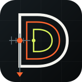

DP-MFG/01 · KUNDER / ONE-OFF / PRODUKTION / DOKUMENTATION
DATUM KERNEL / IDENTITY SYSTEM 02
Konstrueret.
Ikke dekoreret.
Mærket er bygget som et produktionssystem. Tre koncentriske D-konturer viser vejen fra rå geometri gennem CAM-strategi til færdig del. X0/Z0, nulpunktet og versionskoden gør identiteten til en del af det tekniske sprog.

Datum Kernel
Hvid er den færdige geometri. Orange er bearbejdningen og det fysiske nulpunkt. Grøn er data- og beslutningslaget i DatumLab.

Systemflisen
Den kompakte version bevarer værktøjsbanerne og referencen på mobil, maskinskærm, dokumentstempel og mærkeplade.
DATUM BLACK
#0B0F12
#0B0F12
FINAL GEOMETRY
#F4F4EF
#F4F4EF
MACHINE SIGNAL
#FF642E
#FF642E
INTELLIGENCE
#D8F15B
#D8F15B